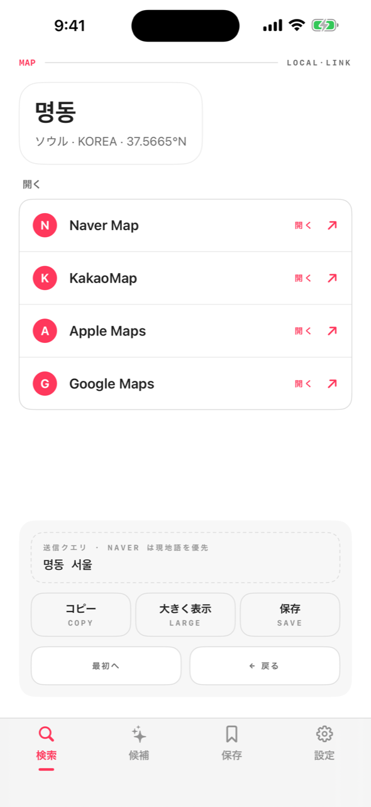
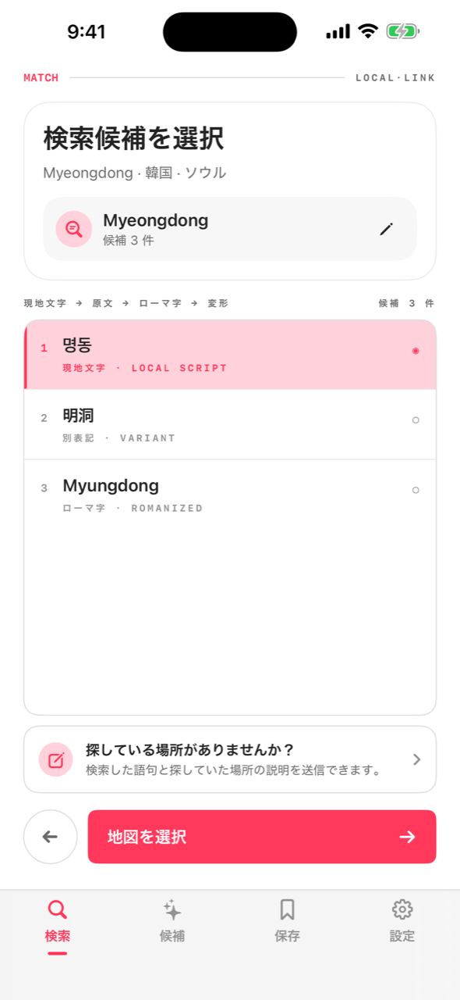
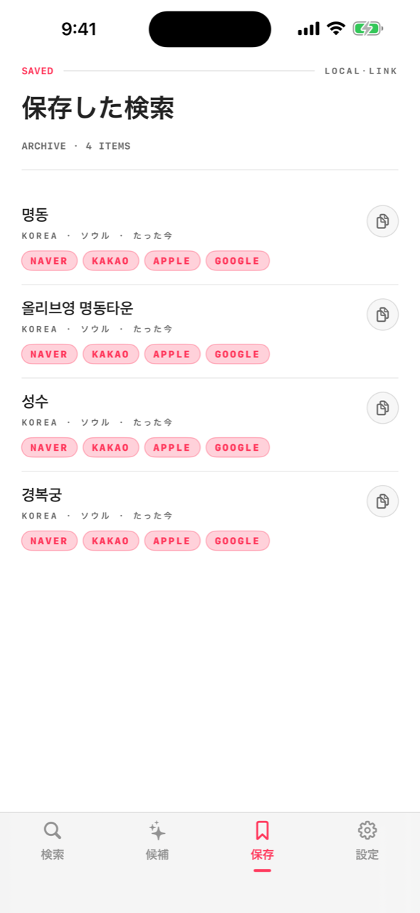

韓国では Google マップが弱く、中国では使えません。ロコリンクが英語名やローマ字を現地の文字の検索語に変換し、その国で実際に使われている地図アプリへつなぎます。

国と都市を選ぶと、その地域の表記に合った検索を用意します。
英語名でもローマ字でも — 現地の地図が実際に認識する現地文字の候補を生成します。
変換した検索語を Naver・Kakao・高徳・Google・Apple マップへワンタップで送信。アプリがなければウェブで開きます。
現地の地図サービスは現地の文字で場所を探します。Naver に「Myeongdong Kyoja」と打っても出ませんが、명동교자なら一発です。
目的地ごとに、実際に使える地図アプリを優先順で表示。アプリが入っていなければ自動でウェブ地図が開きます。


変換データはアプリに内蔵。電波がなくても変換できます。
アカウント不要。分析データが端末の外に出ることはありません。
保存した場所はあなたの iCloud で iPad にも同期。当社サーバーは使いません。
ソウルのコスメ、上海のカフェ — 目的地ごとの定番をキュレーション。
日本語 · English · 한국어 · 简体中文 · 繁體中文、UI も変換も。
現地の文字を全画面でタクシー運転手に見せたり、どこへでもコピー。